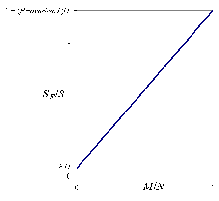
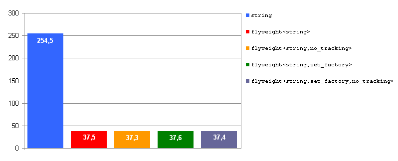
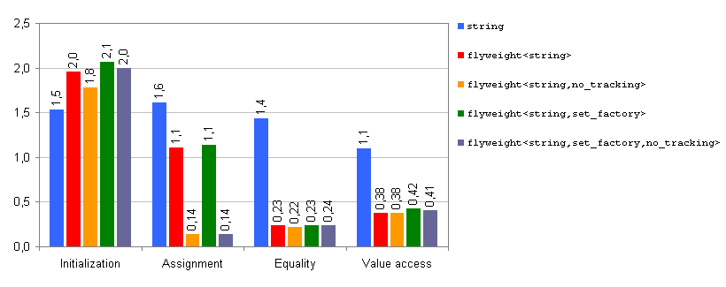
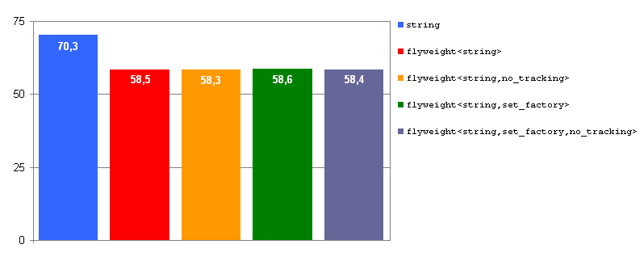
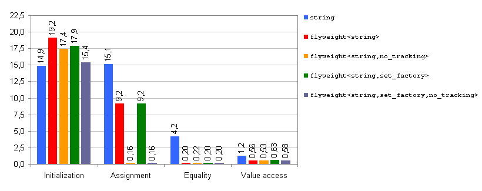

Boost.Flyweight PerformanceBoost.Flyweight Performance
Boost.Flyweight PerformanceBoost.Flyweight Performance
We show how to estimate the memory reduction obtained by the usage of
Boost.Flyweight in a particular scenario and study the impact on the execution
time for the different functional areas of flyweight.
Some experimental results are provided.
As we saw in the tutorial rationale, the flyweight pattern is based on two types of objects:
The only data member of a flyweight object is a so-called
handle, an opaque object of small size provided by the internal
flyweight factory to refer to the entries it stores. For the default
hashed_factory,
this handle is merely a pointer, so sizeof(flyweight<T>)=sizeof(void*),
4 bytes in typical 32-bit architectures.
For other types of factories, the handle is an iterator to an internal
container used in the implementation of the factory: again, its size
is typically that of a pointer.
The entries stored in the factory associated to flyweight<T,...>
need not only hold a value of T, but also contain additional
information related to the internal implementation of
flyweight<T,...>:
entry = sizeof(T) + overhead.
For the current implementation of Boost.Flyweight, the following aspects contribute to overhead:
flyweight instantiation. Values are given in words,
i.e. the size of a pointer, which is 4 bytes in a typical 32-bit architecture.
Alignment may introduce additional overhead.
| component | overhead (words) | |
|---|---|---|
key_value |
with key extractor | 1(1) |
| without key extractor | 1 + sizeof(Key) |
|
| factory | hashed_factory |
~2.5 |
set_factory |
4(2) | |
assoc_container_factory |
depends on the container used | |
| tracking mechanism | refcounted |
2(3) |
no_tracking |
0 | |
sizeof(Key)<=sizeof(Value).std::set this overhead reduces to 3.
For instance, for the default configuration parameters of flyweight,
overhead is typically 2.5(hashed_factory) + 2(refcounted)
= 4.5 words.
Consider a scenario where there are N different objects of type T
jointly taking M different values. The objects consume then
S = N·T bytes, where T is defined as the
average size of T (sizeof(T) plus dynamic
memory allocated by T objects).
If we now replace T by some instantiation
flyweight<T,...>, the resulting memory consumption
will be
SF = N·P + M·(T + overhead),
where P is sizeof(flyweight<T,...>), typically
equal to sizeof(void*), as seen before.
The ratio SF / S is then
SF / S = (P / T)+ (M / N)(1 + overhead / T).
SF / S tends to its minimum, P / T,
as M / N tends to 0, i.e. when the degree of value redundancy
among T objects grows higher. On the other hand, the worst possible case
SF / S = 1 + (P + overhead) / T
happens when M / N = 1, that is, if there is no value redundancy at all; in this situation there is
no point in applying the flyweight pattern in the first place.

Fig. 1: Relative memory consumption of Boost.Flyweight as a function of value diversity.
The introduction of the flyweight pattern involves an extra level of indirection that, in general, results in some execution overhead when accessing the values. On the other hand, manipulation of flyweight objects is considerably faster than moving around the heavy values they stand for. We analyze qualitatively the execution overheads or improvements associated to the different usage contexts of Boost.Flyweight.
As compared with the initialization an object of type T, constructing
a flyweight<T> performs important extra work like looking
up the value in the flyweight factory and inserting it if it is not present.
So, construction of flyweights (other than copy construction, which is
cheap), is expected to be noticeably slower than the construction of the
underlying type T. Much of the time spent at constructing
the associated T value proper can be saved, however, by
using key-value flyweights.
Assignment of flyweight objects is extremely fast, as it only involves
assigning an internal handle type used to refer to the shared value. Moreover,
assignment of flyweight objects never throws. Assignment time
is influenced by the type of tracking
policy used; in this regard,
no_tracking
is the fastest option.
Comparing two flyweight objects for equality reduces to
checking that the addresses of the values they are associated to
are equal; in general, this operation is much faster than comparing the
underlying values. This aspect is of particular relevance when the flyweight
objects stand for complex values like those arising in the application of
the composite pattern.
The conversion from flyweight<T> to const T&
relies on a level of indirection relating the flyweight objects to the
values they are associated to; so, value access is expected to be slower
when using Boost.Flyweight as compared to using the associated values
directly. This overhead, however, can be masked by an indirect improvement
resulting from locality and cache effects: as the set of different T
values handled by an instantiation of flyweight<T> is
generally much smaller than the equivalent family of T objects
when Boost.Flyweight is not used, active values can fit better
into the processor cache.
A profiling program was devised to test
the space and time efficiency of different instantiations of flyweight
against a base situation not using Boost.Flyweight. The profiled scenarios are:
std::string.flyweight<std::string> with default configuration aspects
(hashed_factory,
refcounted tracking,
simple_locking).
flyweight<std::string,no_tracking>.flyweight<std::string,set_factory>.flyweight<std::string,set_factory,no_tracking>.Actually the types tested are not exactly those listed above, but instrumented versions that keep track of the allocated memory for profiling purposes. The program parses a text file into an array of words and then perform various manipulations involving the different context usages of Boost.Flyweight discussed previously. As our text file we have used the plain text version of Project Gutenberg edition of Don Quijote (2.04 MB).
The program was built with default release settings and _SECURE_SCL=0.
Tests were run under Windows XP in a machine equipped with an Intel Core 2 Duo T5500
processor and 1 GB of RAM.

Fig. 2: Memory consumption, MSVC++ 8.0. Values in MB.
The results show the memory consumption figures for the different profiled
scenarios.
The standard library implementation of MSVC++ 8.0 features the so-called
small buffer optimization for strings, by which std::string
objects hold a small buffer that can be used when the string is short,
thus avoding dynamic allocations. This results in sizeof(std::string)
being quite high, 28 bytes. In our particular test strings are almost always
held in the small buffer, so the minimum SF / S
achievable is 4/28 = 14.3%, which is quite close to the experimental
results, given that the memory devoted to storage of shared values
is residual (around 3% of total memory) due to the high word redundancy
of the text source.

Fig. 3: Execution time, MSVC++ 8.0. Values in seconds.
The figure displays execution times for the profiled scenarios in different
usage contexts. In accordance with our previous
qualitative analysis, initialization of flyweights
carries an important overhead with respect to the base case scenario (between 20% and 40%
of additional execution time), while the other usage contexts
(assignment, equality comparison and value access) have performance gains,
with speedup factors of more than 10 in some cases. The use of a
refcounted
tracking policy introduces penalties with respect to
no_tracking
in initialization and assignment, but has no effect in equality comparison
and value access.
The Cygwin/MinGW version of the compiler was used, with command options
-ftemplate-depth-128 -O3 -finline-functions -DNDEBUG.
Tests were run under a Cygwin terminal in the same machine as before.

Fig. 4: Memory consumption, GCC 3.4.4. Values in MB.
The standard library used by GCC 3.4.4 implements std::string
using copy-on-write
optimization techniques, which leads to very small value redundancy for
some usage patterns. This explains why the memory reduction achieved
by Boost.Flyweight is so poor in this case. Other contexts where assignment
is much less used than direct construction will favor Boost.Flyweight
over plain copy-on-write std::strings.

Fig. 5: Execution time, GCC 3.4.4. Values in seconds.
Relative performance figures are similar to those obtained for
MSVC++ 8.0, although some of the
speedups achieved by Boost.Flyweight are higher here (×25
in equality comparison and up to ×100 in assignment when
no_tracking
is in effect).
The introduction of Boost.Flyweight in application scenarios with very
high value redundancy yields important reductions in memory consumption:
this is especially relevant when data volume approaches the limits of
physical memory in the machine, since Boost.Flyweight can avoid virtual
memory thrashing thus making the application viable. We have shown
how to estimate the achievable reduction in memory consumption from
some basic value statistics and knowledge of the flyweight
configuration aspects being used.
Boost.Flyweight can also accelerate execution times in areas other than object initialization, due to the fastest manipulation of small flyweight objects and to locality and cache effects arising from the drastic reduction of the set of allocated values.
Revised June 22nd 2009
© Copyright 2006-2009 Joaquín M López Muñoz. Distributed under the Boost Software License, Version 1.0. (See accompanying file LICENSE_1_0.txt or copy at http://www.boost.org/LICENSE_1_0.txt)